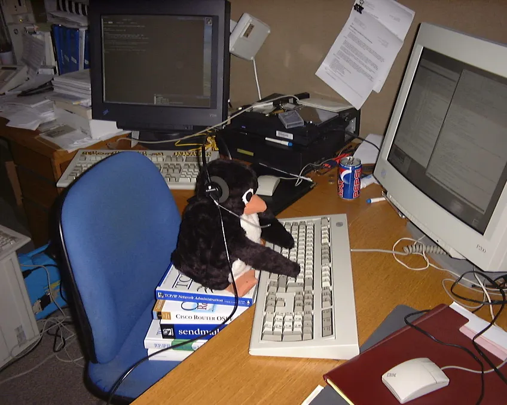

Internet es y será una herramienta, la comunicación entre maquinas es la base del siglo XXI, pero NO nosdominará. Es preciso que todos sus usuarios sean autónomos, sean soberanos, sean conocidos de lo que están tratando. La vida, el mundo real NO sucederá online, la vida sucederá en el mundo y no al revés. Esto es importante recalcarlo.
Es vital reinventar la relación con el teléfono móvil, jamas será necesario para la vida diaria ni para ser un ciudadano. La HIPERmasificación que comenzó con los ‘smartphonesʼ y se afianzó durante la pandemia ha alcanzado una nueva cima. "El Internet de las Cosas", la red como otro elemento vital de la sociedad y no como un lugar paralelo. Se pretende hacer que los móviles sean absolutamente imprescindibles para acceder a las cosas sin una alternativa física, analógica o basada en la web, del mismo modo que lo son los documentos de matriculación de los coches o las tarjetas de la seguridad social.
Básicamente, hace que el “tener la aplicaciónˮ sea poco más que vital para no quedarte “soft-blockˮ (en el sentido de los videojuegos) en la vida real.
Idealmente, tu conexión real con el ciberespacio será tu ordenador, y harás mas cosas que consumir. Idealmente no usaras todo el rato el navegador para todo. Idealmente, producirás con tu ordenador, leerás, jugaras videojuegos (de calidad, optimizados, bien programados; pero eso para otro día)…
Ruego a todos los usuarios de la nueva ‘netʼ que no hagan de esta su dependencia.
En cuanto al entretenimiento o la creación de contenidos, más allá de la ‘enshitificaciónʼ me parece preocupante la cantidad de espacio que está ocupando en Internet. Hablo de terabytes y terabytes, cientos de ellos ocupados por una sola cuenta burner. ¿Restringirá YouTube la posibilidad de subir contenidos, borrará masivamente la bazofia de la IA o no hará nada? ¿Acaso las plataformas tienen la capacidad de hacer algo sin entrometer la privacidad de los usuarios? Twitter/X es el ejemplo de que no, los usuarios ya están pagando con su anonimato el precio de tener un Majority Brown Internet.
Este presente de basura acumulada y vulgar centralización de Internet, aunque esto es común en la sociedad ahora y no sólo una cuestión virtual, trae grandes oportunidades en mi opinión. Creo que del montón de basura surgirán grandes proyectos y gente maravillosa que se ha visto llevada al límite por la situación actual y ha decidido salir en busca de la verdad (y de su propio Yo). Con esto último me refiero a la vida real. Lo que quiero decir es que está surgiendo una selecta clase alta que destaca por ser genuina y no una copia de una copia de… no son lo que consumen.
Haciendo hincapié en este último tema que he sacado, creo que hoy en día es sumamente valioso ser uno mismo, ser genuino, y cada vez será más. Yo espero un inminente Renacimiento.
Probablemente, no. Podría ser duro de oír, pero para lo que haces en redes, mejor piensa y enfréntate
a tus ideas. Internet no es tu niñera psicológica, Internet es la conexión de conocimiento y la
comunicación internacional, es un mundo en si, no es el mundo adaptado a lo virtual, no nos confundamos.
Internet tiene su propia cultura; si no encajas, no hay nada que hacer. ¿Quieres tener un trozo de la web?
Créalo TU mismo, ¿quieres algo? HAZLO. TU.
ROMPE
EL
MÓVIL.
Cuando la sociedad moderna colapse, serás el responsable de volver a crear el internet de 0

el router parpadea, la lucha sigue...